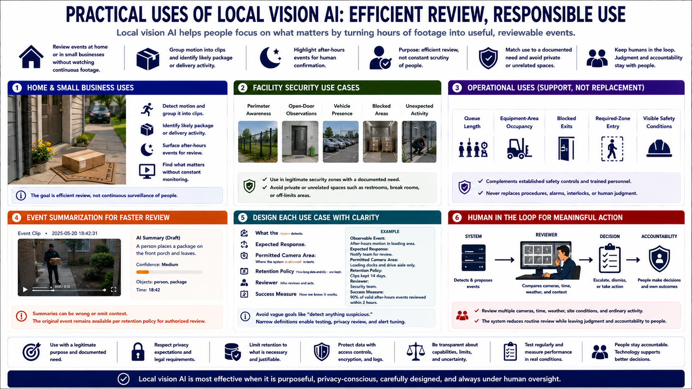

Common Use Cases
Connecting to LMS... Progress: in progress

Narration
Local vision AI can help a home or small business review camera events without watching continuous footage. It can group motion into clips, identify likely package or delivery activity, and present after-hours events for human confirmation. The purpose is efficient review, not constant scrutiny of people.
Facilities may use it for perimeter awareness, open-door observations, vehicle presence, blocked areas, or unexpected activity in legitimate security zones. Coverage should match a documented need and avoid private or unrelated spaces.
Operational uses include observing queue length, equipment-area occupancy, blocked exits, required-zone entry, or visible safety conditions. Model output should supplement established safety controls and trained personnel, never replace them.
Event summarization can describe what a clip appears to contain and help reviewers find relevant footage. Summaries can be wrong or omit context, so the original event should remain available under retention policy for authorized review.
Design each use case around an observable event, expected response, permitted camera area, retention, reviewer, and success measure. Avoid vague goals such as detecting anything suspicious. Narrow definitions make testing, privacy review, and alert tuning possible.
Keep a human in the loop for meaningful action. A reviewer can compare multiple cameras, time, weather, site conditions, and ordinary activity before escalating. The system is most useful when it reduces routine review while leaving judgment and accountability with people.